{% extends "inner_layout.html" %}
{% block inner_body %}
<script src="{{ url_for('static', filename='js/settings.js') }}"></script>

<script>
    const settings = {{ dispenser_settings | tojson }};
    let currentMode = settings.mode
    console.log("Current mode ",currentMode)
    console.log("Data in script:", settings);
    window.addEventListener("load", () => {
        setUIMode(currentMode)
    });

    function handleSwitchClick(){
        console.log("Current mode ",currentMode)
        currentMode = switchMode(currentMode)
        console.log("NEW MODE ",currentMode)
    }
</script>


<div class="content-container">
    <div class="settingsContainer">
        <div class="modeContainer highlighted" id="automatic-container">

        </div>
        <button class="switch-mode-button" onclick="handleSwitchClick()">
            
            
        </button>
        <div  class="modeContainer" id="manual-container">

        </div>
    </div>
</div>
{% endblock %}
